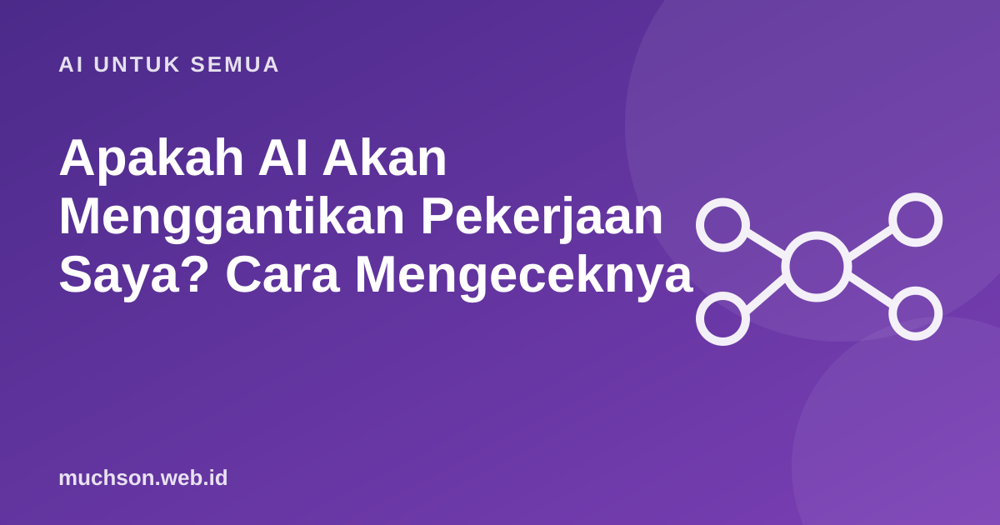

Apakah AI Akan Menggantikan Pekerjaan Saya? Cara Mengeceknya
Ketakutan akan digantikan AI nyata, tetapi gambarnya lebih halus dari "semua hilang" atau "tidak ada yang berubah". Yang berubah adalah tugas di dalam pekerjaan. Memahami tugas mana yang rentan membantu Anda menyiapkan diri.
Oleh Muhammad Muchson Attoyibi··1 menit baca

Pekerjaan terdiri dari tugas
Satu pekerjaan berisi banyak tugas. AI biasanya mengambil sebagian tugas, terutama yang berulang, berbasis teks, dan punya pola jelas, sementara tugas lain tetap membutuhkan penilaian, empati, dan tanggung jawab manusia. Karena itu dampaknya berbeda-beda untuk setiap orang, bahkan dalam profesi yang sama.
Peta kasar. Teknologi terus berkembang, jadi tinjau berkala.
Cek profil tugas Anda
Rencana belajar yang masuk akal
Cobalah alat AI untuk tugas berulang Anda dalam dua minggu ke depan.
Pelajari cara bertanya yang baik dan cara memeriksa hasilnya.
Perkuat keterampilan yang sulit digantikan: komunikasi, analisis, penilaian.
Pahami bidang Anda lebih dalam, karena memeriksa AI membutuhkan pengetahuan.
Ikuti perkembangan, tetapi hindari panik karena judul berita.
Sikap yang membantu
Orang yang menguasai AI cenderung lebih kompetitif daripada yang menolaknya sepenuhnya, dan itu berlaku lintas profesi. Anggap AI sebagai alat baru, seperti spreadsheet dahulu.
Tanya jawab
Pekerjaan apa yang paling aman?
Tidak ada yang mutlak. Pekerjaan yang butuh keterampilan fisik bervariasi, empati, dan tanggung jawab langsung relatif lebih sulit digantikan.
Apakah belajar coding masih perlu?
Ya, tetapi fokusnya bergeser pada merumuskan masalah, merancang, dan memeriksa kode yang dibantu AI.
Bagaimana bila perusahaan saya mulai memakai AI?
Jadilah orang yang memahaminya. Tawarkan diri menguji dan mengawasi hasilnya, karena itu keterampilan yang dibutuhkan.
Bagikan:
Muhammad Muchson AttoyibiSoftware Engineer dan Academic Trainer di Malang. Menulis tentang teknologi, belajar, dan hal praktis sehari-hari. Tentang saya